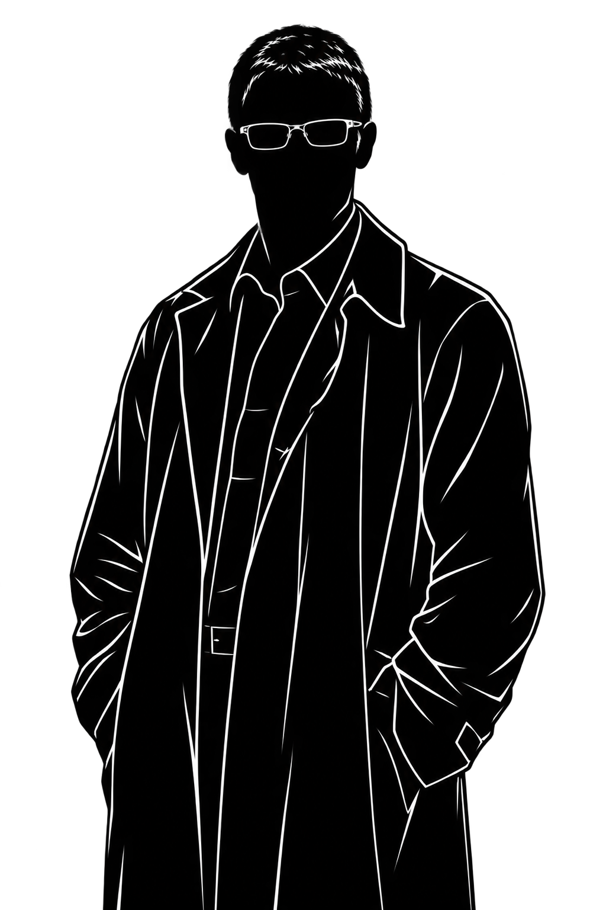
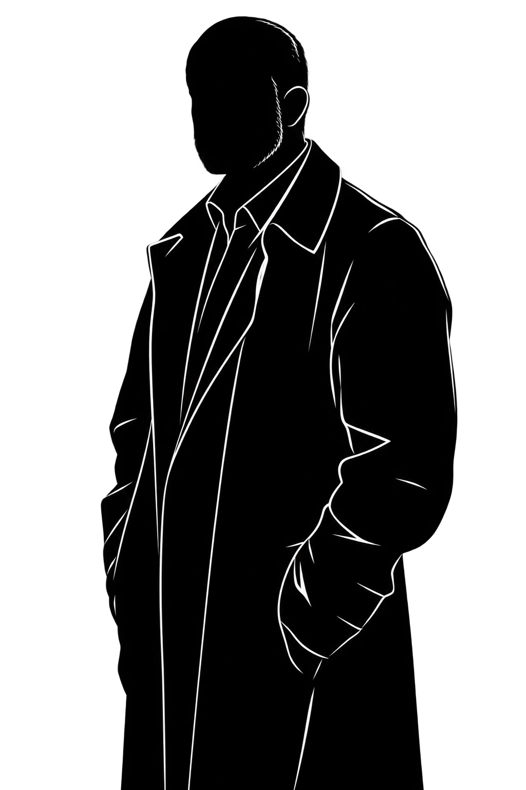
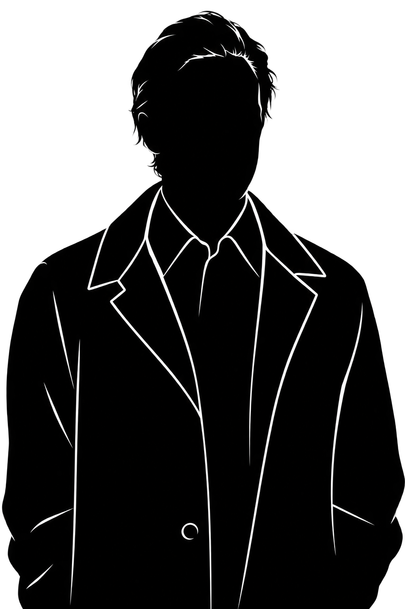
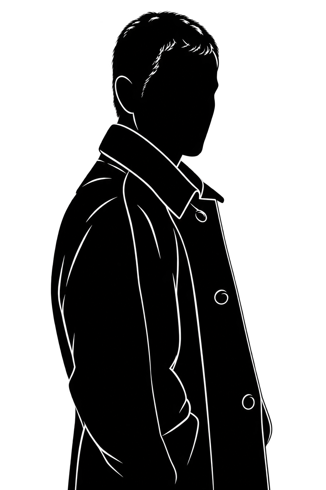

"Conozco un grupo de gente que te puede ayudar"

"Supongamos que usted está enfermo, y lo tienen que operar. La operación puede fallar, pero usted buscaría al mejor cirujano disponible. Bueno, en este caso nosotros no somos solamente el mejor cirujano... también somos el único."
“Excelente servicio. Me ayudaron a recuperar a mi mujer cuando ya pensaba que la había perdido definitivamente.”
— Galván“Me sacaron de encima a un mafioso al que le debía plata. Excelente servicio.”
— Venegas“Después de tantos años trabajando me querían echar como si nada. Los muchachos hicieron que me devolvieran el puesto.”
— José Feller.“Contraté a los Simuladores porque un español no entendía la palabra ‘no’. No volvió a molestarme.”
— Alicia Corsiglia“Mi hijo tenía que aprobar siete materias en tiempo récord. Los muchachos se ocuparon de todo. Mi mujer nunca se enteró.”
— MiguensLogística y planificación de los operativos.

Técnica y movilidad

Caracterización.

Investigación.
